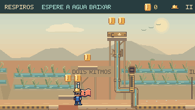
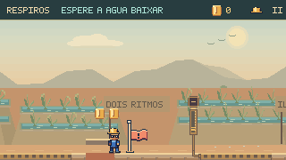

Experimentar antes da vala
Dois andaimes e quatro moedas criam um pequeno percurso elevado sobre a rua. Depois vêm as comportas e a escolha entre taipas e manutenção.
Continuação no Pátio: Escada de manutenção, recuperação local e HUD compartilhado.
Cinco fases ganharam oportunidades de exploração, recompensas e retornos. O jogador pode experimentar saltos na vila, isolar um respiro, escavar um desvio e atravessar pela galeria inferior da Subida.


ANTESDEPOISSubir pelos degraus e usar a sentada na placa isola o respiro C. Seu tubo chega à grelha correspondente; o último jato continua funcionando. O ponto seguro fica antes da escolha.
O registro altera um perigo, o bolso da Galeria recompensa a descida e a passagem inferior da Subida chega à outra margem. Cada desvio tem uma saída verificável.
Os primeiros andaimes ficam sobre a rua. O bolso escavável permite sair mesmo sem capacete. Nos Respiros, reabrir o registro dá o aviso completo antes da água.
A subida recolhe três novas moedas e aciona o registro com a sentada. Depois da descida, ainda é preciso observar o ciclo independente do respiro D.
A revisão considera as seis fases principais e as duas oficinas. Pátio, Ossabravo e Prefeito mantêm os desafios existentes; as mudanças desta rodada se concentram nas outras cinco.
Dois andaimes e quatro moedas criam um pequeno percurso elevado sobre a rua. Depois vêm as comportas e a escolha entre taipas e manutenção.
O seletor A/B, a espera pela mudança e o salto final conservam sua sequência. O piso inferior e o retorno ao seletor permitem recuperar uma queda.
Atravessar no intervalo seco ou subir para isolar C. O último jato mantém o desafio de timing e o refúgio separa as duas decisões.
Antecipação, investida, frenagem e ossos continuam dando ritmo ao combate. A área de reação permanece livre.
A galeria de inspeção ganhou uma saída à direita. Recolher suas moedas agora faz parte de um caminho contínuo até o terraço.
Registro, plataforma, pressão e golpe por cima continuam compondo o encontro dos três lacres. A água pública responde à conclusão real.
Uma tampa opcional abre o bolso de três moedas. É possível voltar por qualquer abertura parcial, com um salto comum.
Três moedas marcam a subida até a tampa. Abrir o alívio ou aproveitar o intervalo seco continuam sendo duas soluções válidas.
946 testes aprovados e build concluído. Os quatro percursos novos passam por teclado e toque simulado, com e sem movimento reduzido. Pausa, morte, restauração, moedas, câmera e reabertura do registro também foram verificados.
As oito cenas passaram pela conferência no capítulo real, em navegador isolado, sem erros. As comparações acima usam poses equivalentes preparadas para inspeção; os vídeos usam percursos nativos independentes.
Os testes demonstram execução e recuperação. A calibração de diversão e dificuldade ainda precisa de sessões com jogadores; os tempos das gravações não representam uma primeira partida.
Comparações e percursos · Conferência no navegador · Revisão de level design · Registro técnico